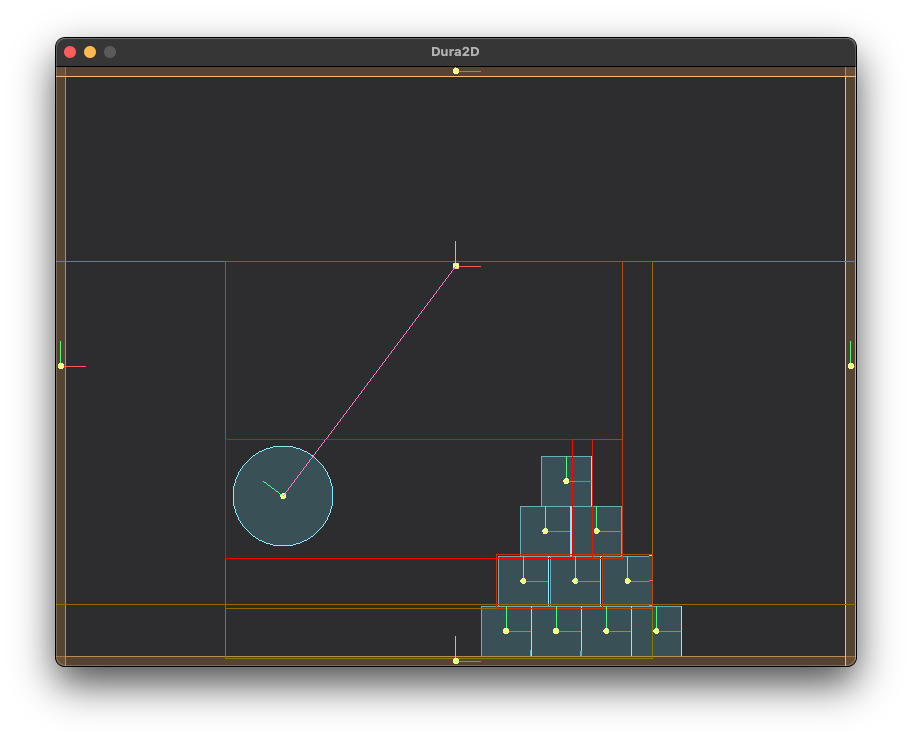

An educational 2D Game Physics Engine

Screenshot of Dura2D Test Bed
🚀 Introduction
This 2D physics engine is an educational tool for exploring the principles behind game physics simulation. The project provides a hands-on approach to understanding fundamental 2D physics concepts, drawing inspiration from sources such as:
🌟 Features
- Robust Constraint System: Experience realistic physical interactions through constraint solver.
- Warm Starting: Enjoy faster simulations with our implementation of warm starting techniques.
- Dynamic AABB Tree: Enhances performance by efficiently updating bounding volume hierarchies in real-time during simulations.
📦 Installation
CPM.cmake (Recommended)
This method is recommended for its simplicity and ease of version management.
First, set up CPM.cmake in your project:
mkdir -p cmake
wget -O cmake/CPM.cmake https://github.com/cpm-cmake/CPM.cmake/releases/latest/download/get_cpm.cmake
In your CMakeLists.txt, add the following lines after project(...):
include(cmake/CPM.cmake)
CPMAddPackage("gh:SOHNE/Dura2D@0.1.0")
add_executable(your_target main.cpp)
target_link_libraries(your_target PRIVATE Dura2D::Dura2D)
Vendored
Choose one of the following vendored approaches based on your preference:
Git Submodule
- Add Dura2D as a submodule to your project:
git submodule add https://github.com/SOHNE/Dura2D.git vendor/Dura2D
git submodule update --init --recursive
- In your project's
CMakeLists.txt, add the submodule directory: add_subdirectory(vendor/Dura2D)
Git Subtree
If you prefer to have more control over updates and want to include Dura2D directly in your repository:
- Add Dura2D as a subtree to your project:
git subtree add --prefix vendor/Dura2D https://github.com/SOHNE/Dura2D.git main --squash
- To update Dura2D in the future:
git subtree pull --prefix vendor/Dura2D https://github.com/SOHNE/Dura2D.git main --squash
- In your project's
CMakeLists.txt, add the subtree directory: add_subdirectory(vendor/Dura2D)
For both vendored approaches, link your target with Dura2D:
target_link_libraries(your_target PRIVATE Dura2D)
🎮 Usage
Here's a quick example:
#include <cstdio>
int
main()
{
constexpr float timeStep = 1.F / 60.F;
for (int i = 0; i < 60 * 5; ++i)
{
world.Step(timeStep);
if (i % 60 == 0)
{
printf(
"Position: (%.2f, %.2f) | Angle: %.2f\n", position.
x, position.
y, angle);
}
}
return 0;
}
A class representing a 2D rigid body.
Definition d2Body.h:28
const d2Vec2 & GetPosition() const
Gets the position of the body.
Definition d2Body.h:324
real GetRotation() const
Gets the rotation angle of the body.
Definition d2Body.h:354
void SetAngularVelocity(real angularVelocity)
Sets the angular velocity of the body.
Definition d2Body.h:344
Represents a 2D physics world.
Definition d2World.h:22
Represents a 2D vector.
Definition d2Math.h:22
real y
Definition d2Math.h:106
real x
Definition d2Math.h:106
⚒️ Building
Prerequisites
- CMake 3.26+
- For test bed web builds: Emscripten/EMSDK properly set up in your environment
Cloning the Repository
git clone https://github.com/SOHNE/Dura2D.git
cd Dura2D
Dura2D Library
Configure the lib project:
cmake -S. --preset <debug | release>
- Build the project:
cmake --build build/lib/<debug | release>
CMake Options
Testbed
- Configure the testbed project:
cmake -S testbed --preset <debug | release>
- Build the testbed:
cmake --build build/testbed/<debug | release>
Web Builds for Testbed
For Emscripten/HTML5 builds:
- Configure:
cmake -S testbed --preset <web-debug | web-release>
- Build:
cmake --build build/testbed/<web-debug | web-release>
Running Unit Tests
- Configure the unit tests:
cmake -S unit-test --preset <default | with-coverage | installed-version>
- Build the tests:
cmake --build build/unit-test/<default | with-coverage | installed-version>
- Run the tests:
ctest --test-dir build/unit-test/<default | with-coverage | installed-version>
Generating Documentation
- Configure the documentation build:
cmake -S docs --preset gendocs
- Generate the documentation:
- The generated documentation will be available at:
build/doc/doxygen/html/index.html
Additional Notes
- All build artifacts are organized in the
build directory, with subdirectories for each component (main library, testbed, unit tests, and documentation).
- Use the
--preset option with cmake commands to easily switch between different configurations.
- For any build issues, ensure all prerequisites are correctly installed and environment variables (like EMSDK for web/HTML5 builds) are properly set.
🛣️ Roadmap
- Introduce contact caching for optimization
- Develop an island state system for bodies
- Add an awake state for bodies
- Create a robust manifold implementation
🤝 Contributing
We welcome contributions! Whether it's bug fixes, feature additions, or documentation improvements, your input is valuable.
🙏 Acknowledgements
A huge thank you to the open-source community and the authors of the resources that inspired this project. Your work continues to educate and inspire.